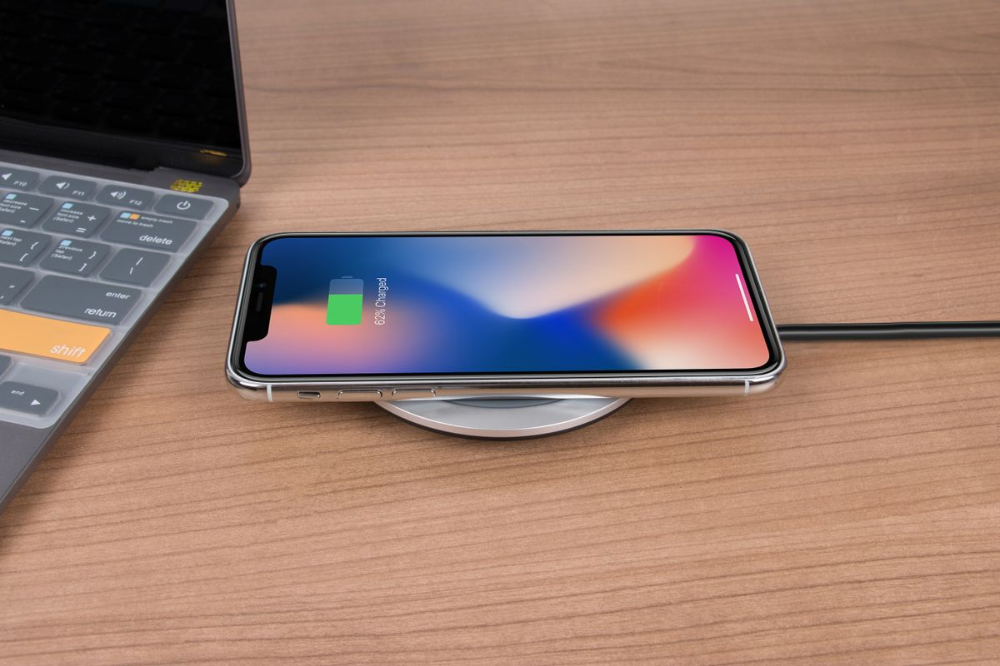
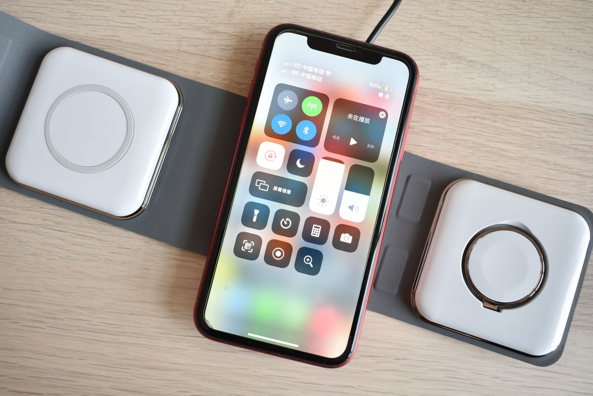
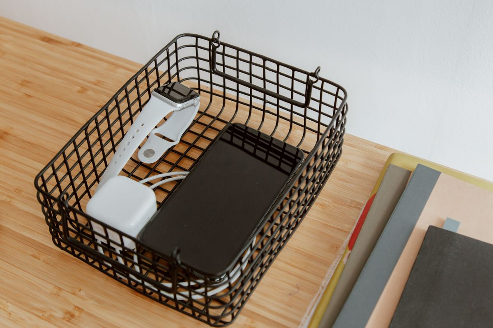

รวมสถานีชาร์จไร้สายและที่ชาร์จหลายพอร์ต จัดโต๊ะทำงานให้ไร้สายรก 2026
รวมสถานีชาร์จไร้สายและที่ชาร์จหลายพอร์ตสำหรับโต๊ะทำงาน ทั้งแท่นชาร์จ 3-in-1 ปลั๊กไฟ USB-C PD ที่ชาร์จมีพัดลม ฐานชาร์จใต้โต๊ะ พร้อมเกณฑ์เลือกซื้อ
อัปเดต กรกฎาคม 2026
ใครที่นั่งทำงานอยู่หน้าโต๊ะทั้งวัน คงรู้ดีว่าอุปกรณ์ที่ต้องชาร์จมันเยอะขึ้นเรื่อย ๆ ไม่ว่าจะมือถือ หูฟังไร้สาย สมาร์ทวอทช์ หรือแม้แต่เมาส์ไร้สาย ถ้าไม่มีจุดชาร์จที่เป็นระบบ สายชาร์จจะกองพันกันจนโต๊ะดูรกและหาไม่เจอเวลารีบ บทความนี้เลยจะพาไปดูว่าสถานีชาร์จแบบไหนที่ช่วยให้โต๊ะทำงานดูเรียบร้อยขึ้น พร้อมเกณฑ์เลือกซื้อที่ควรรู้ก่อนตัดสินใจจ่ายเงิน
ทำไมโต๊ะทำงานยุคนี้ถึงต้องมีสถานีชาร์จ

เดิมทีเราอาจจะเสียบสายชาร์จมือถือแค่เส้นเดียวก็พอ แต่ตอนนี้อุปกรณ์ไร้สายรอบตัวเพิ่มขึ้นมาก การมีจุดชาร์จรวมศูนย์ช่วยลดจำนวนสายไฟบนโต๊ะ ลดเวลาควานหาที่เสียบ และยังช่วยให้แบตอุปกรณ์ต่าง ๆ พร้อมใช้งานเสมอโดยไม่ต้องคอยสลับสายเอง อีกจุดที่มองข้ามไม่ได้คือเรื่องความปลอดภัยของสายไฟ ยิ่งสายพันกันเยอะยิ่งเสี่ยงสายชำรุดหรือปลั๊กหลวมโดยไม่รู้ตัว
รีวิวสถานีชาร์จที่น่าสนใจสำหรับโต๊ะทำงาน
1. แท่นชาร์จไร้สาย 3-in-1 สำหรับมือถือ หูฟัง และนาฬิกา

แท่นชาร์จแบบ 3-in-1 คือทางเลือกที่คุ้มที่สุดสำหรับคนที่มีทั้งมือถือ หูฟังไร้สายแบบมีเคสชาร์จ และสมาร์ทวอทช์ วางอุปกรณ์ทั้งสามชิ้นพร้อมกันได้โดยไม่ต้องมีสายพะรุงพะรัง ดีไซน์ส่วนใหญ่ทำมาให้ตั้งเป็นแนวตั้งได้ด้วย เผื่อใครอยากดูแจ้งเตือนระหว่างชาร์จ แท่นชาร์จไร้สาย 3-in-1 เป็นตัวเลือกที่ลงตัวสำหรับโต๊ะทำงานขนาดกลางถึงเล็ก เพราะกินพื้นที่น้อยแต่ใช้งานได้ครบ
2. ปลั๊กไฟตั้งโต๊ะพร้อมช่อง USB-C แบบ PD
ถ้าอุปกรณ์ในบ้านยังเป็นแบบเสียบสายอยู่ ปลั๊กไฟตั้งโต๊ะที่มีทั้งช่องเสียบปกติและ USB-C ชาร์จเร็วรวมกันในตัวเดียว จะช่วยลดจำนวนอะแดปเตอร์ที่ต้องพกพา ปลั๊กไฟตั้งโต๊ะพร้อม USB-C PD รุ่นที่ดีควรมีระบบตัดไฟอัตโนมัติเมื่อชาร์จเต็ม และมีสายไฟยาวพอที่จะซ่อนลงใต้โต๊ะได้โดยไม่ต้องต่อปลั๊กพ่วงเพิ่ม
3. ที่ชาร์จไร้สายทรงตั้งพร้อมพัดลมระบายความร้อน
ปัญหาหนึ่งของการชาร์จไร้สายคือเครื่องร้อนเร็วกว่าการชาร์จผ่านสาย ถ้าใครชาร์จมือถือทิ้งไว้นาน ๆ ระหว่างประชุมออนไลน์ แนะนำรุ่นที่มีพัดลมระบายความร้อนในตัว จะช่วยให้ชาร์จไฟเข้าได้เร็วและสม่ำเสมอกว่า ที่ชาร์จไร้สายพร้อมพัดลมระบายความร้อน เหมาะกับคนที่ใช้มือถือเปิดแอปประชุมหรือดูวิดีโอไปด้วยระหว่างชาร์จ
4. ฐานชาร์จซ่อนใต้โต๊ะแบบไร้สาย
สำหรับคนที่อยากให้โต๊ะดูโล่งที่สุดเท่าที่จะทำได้ ฐานชาร์จไร้สายบางรุ่นสามารถติดตั้งซ่อนไว้ใต้แผ่นโต๊ะได้เลย วางมือถือทาบบนโต๊ะตรงจุดที่ติดตั้งก็ชาร์จได้ทันทีโดยไม่เห็นอุปกรณ์ใด ๆ อยู่บนโต๊ะ ฐานชาร์จไร้สายติดตั้งใต้โต๊ะ เหมาะกับคนที่เน้นความมินิมอลเป็นพิเศษ แต่ควรเช็กความหนาของแผ่นโต๊ะก่อนซื้อ เพราะแต่ละรุ่นรองรับความหนาไม่เท่ากัน
5. กล่องจัดระเบียบสายชาร์จพร้อมช่องเสียบในตัว

นอกจากตัวชาร์จเองแล้ว กล่องจัดระเบียบที่ซ่อนปลั๊กพ่วงและสายไฟไว้ข้างในก็ช่วยได้มากในการทำให้โต๊ะดูสะอาดตา แค่เจาะรูให้สายที่ใช้งานโผล่ออกมา ส่วนสายที่เหลือกับปลั๊กพ่วงจะถูกซ่อนอยู่ในกล่อง กล่องจัดระเบียบสายชาร์จและปลั๊กพ่วง ใช้คู่กับสถานีชาร์จไร้สายด้านบนได้ลงตัวมาก
เกณฑ์การเลือกซื้อสถานีชาร์จให้เหมาะกับโต๊ะทำงาน
ก่อนตัดสินใจซื้อ ลองพิจารณาปัจจัยเหล่านี้ประกอบกัน
กำลังไฟที่รองรับ ควรเช็กว่าแท่นชาร์จรองรับกำลังไฟสูงสุดเท่าไหร่ และตรงกับสเปกอุปกรณ์ที่เราใช้อยู่หรือไม่ เพราะถ้ากำลังไฟต่ำเกินไปจะชาร์จช้ากว่าที่ควร
จำนวนอุปกรณ์ที่ต้องชาร์จพร้อมกัน ถ้ามีทั้งมือถือ หูฟัง นาฬิกา ควรเลือกแท่นชาร์จแบบหลายจุดตั้งแต่แรก จะคุ้มกว่าซื้อทีละชิ้นแล้วมาต่อพ่วงทีหลัง
พื้นที่บนโต๊ะที่มี ถ้าโต๊ะเล็กควรเลือกแบบตั้งแนวตั้งหรือแบบซ่อนใต้โต๊ะ เพื่อประหยัดพื้นที่หน้าโต๊ะไว้ทำงานจริง
ระบบความปลอดภัย เลือกรุ่นที่มีการรับรองมาตรฐานความปลอดภัยไฟฟ้า มีระบบตัดไฟอัตโนมัติ และป้องกันไฟกระชาก เพราะอุปกรณ์ชาร์จเป็นอะไรที่เสียบทิ้งไว้เป็นเวลานาน ความปลอดภัยจึงสำคัญกว่าราคาถูก
ความเข้ากันได้กับเคสมือถือ บางเคสหนาเกินไปจะทำให้ชาร์จไร้สายไม่เข้าหรือเข้าช้า ควรเช็กก่อนว่าต้องถอดเคสก่อนชาร์จหรือไม่
สรุป
การจัดสถานีชาร์จให้เป็นระบบไม่ใช่แค่เรื่องความสวยงาม แต่ช่วยให้การทำงานแต่ละวันลื่นไหลขึ้น ไม่ต้องเสียเวลาหาสายชาร์จหรือปลั๊กว่าง และยังลดความเสี่ยงจากสายไฟพันกันบนโต๊ะได้ด้วย ลองเลือกสถานีชาร์จที่ตรงกับจำนวนอุปกรณ์และพื้นที่โต๊ะของตัวเอง แล้วจะรู้สึกได้เลยว่าโต๊ะทำงานดูเป็นระเบียบและใช้งานง่ายขึ้นทันที
บทความนี้มีลิงก์ affiliate เมื่อคุณซื้อผ่านลิงก์ เราอาจได้รับค่าคอมมิชชั่นโดยที่คุณไม่ต้องจ่ายเพิ่ม